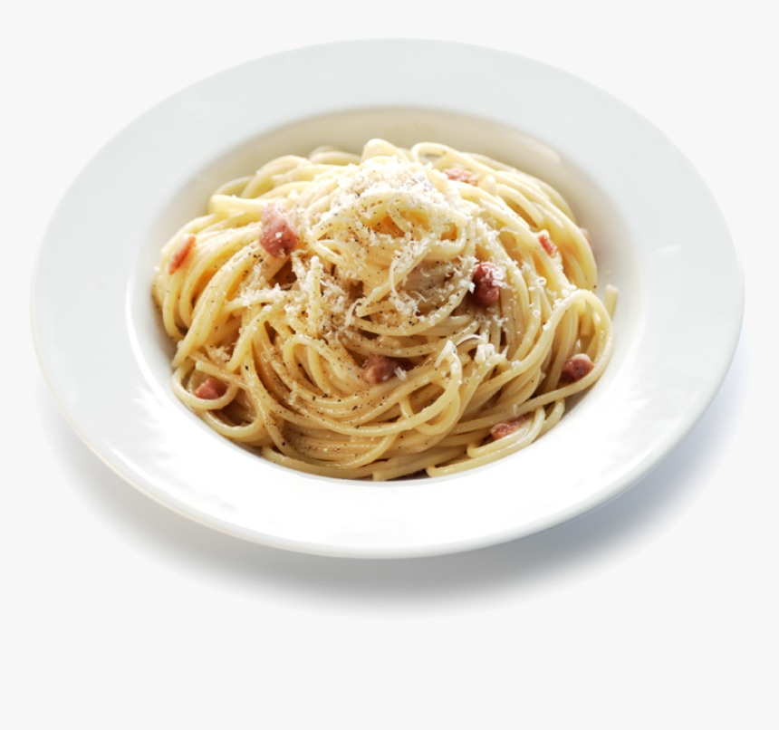

Pasta Carbonara

Description
An Italian dish that's quick and easy to make. There are many different versions of this recipe,
but the one below is the traditional Italian version (no cream!) and relies on just a few choice ingredients.
Ingredients (serves 2)
- Guanciale (or pancetta)
- Eggs x3
- Parmesan cheese (a good sized chunk)
- Black pepper
- Pasta (ideally spaghetti) x200g
Steps
- Heat a pan of cold water until boiling.
- Meanwhile, break the eggs into a bowl and finely grate the parmesan on top. Add pepper and whisk with fork.
- When water is boiling, add generous pinch of salt and pasta - leave pot uncovered.
- Fry the gauncale on a low heat
- Just before pasta is cooked al dente, throw pasta on top of guanciale with splash of water from the pan
- Mix together, take off heat and pour over eggs - mix through and serve with extra parmesan and pepper